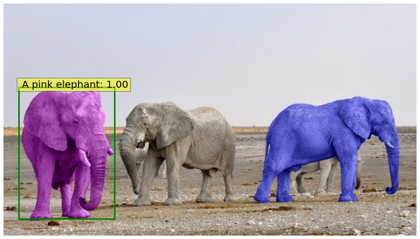
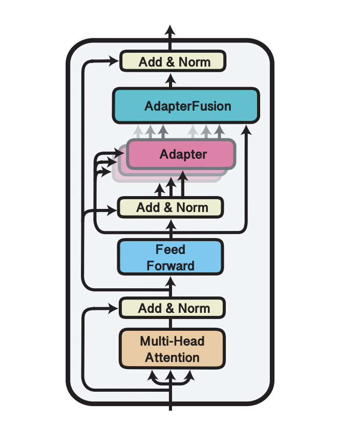
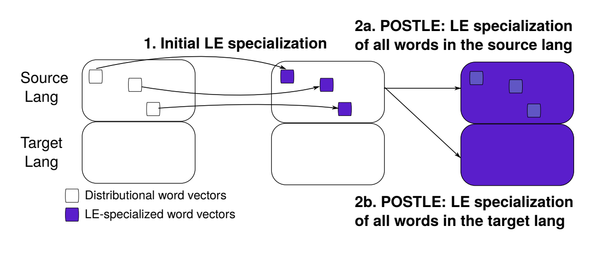
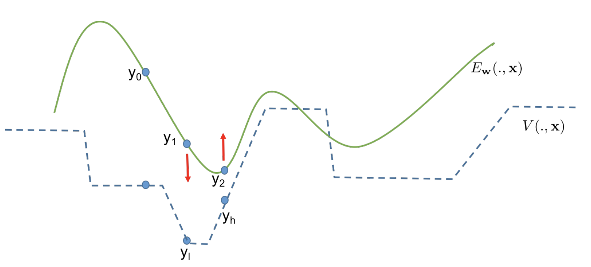

<!--<div class="home">-->

<!--    <h1>About</h1>-->
<!--    {% include image.html url="/images/IMG_9402.jpg" caption="Aishwarya Kamath" width=300 align="center" %}-->
<!--    <p> I am a PhD student at New York University's Center for Data Science, advised by Prof. Yann LeCun and Prof.-->
<!--        Kyunghyun Cho. My research focuses on using information from multiple sources such as text, images, video and-->
<!--        speech to improve commonsense reasoning capabilities of machines. Prior to this, I was advised during my Masters-->
<!--        by Prof. Andrew McCallum at University of Massachusetts Amherst in areas of natural language processing and-->
<!--        machine learning, with a special focus on structured prediction.</p>-->
<!--    &lt;!&ndash; <p> I have also worked as a Machine Learning Engineer as part of the Machine Learning Research Group at Oracle Labs in Burlington, MA.  </p>-->
<!--    <p> When I am not busy doing coursework or research, I love to paint and when time permits, keep my hobby of playing basketball alive. </p> &ndash;&gt;-->
<!--    <br>-->
<!--    <p> If you are a NYU Master's student looking to work on research, especially related to multi-modal learning, feel-->
<!--        free to reach out to me! :) </p>-->
<!--    <hr>-->
<!--    <br>-->

<!--</div>-->

<table style="width:100%;max-width:800px;border:0px;border-spacing:0px;border-collapse:separate;margin-right:auto;margin-left:auto;">
    <tbody>

    <table style="width:100%;border:0px;border-spacing:0px;border-collapse:separate;margin-right:auto;margin-left:auto;">
                <tbody>
                <tr>
                    <td style="padding:20px;width:100%;vertical-align:middle">
                        <h1>About</h1>
                    </td>
                </tr>
                </tbody>
            </table>


    <tr style="padding:0px">
        <td style="padding:0px">
            <table style="width:100%;border:0px;border-spacing:0px;border-collapse:separate;margin-right:auto;margin-left:auto;">
                <tbody>
                <tr style="padding:0px">
                    <td style="padding:2.5%;width:63%;vertical-align:middle">
<!--                        <p style="text-align:center">-->
<!--                            <name>Aishwarya Kamath</name>-->
<!--                        </p>-->
                        <p>I am a PhD student at <a href="https://cds.nyu.edu/">New York University's Center for
                            Data Science</a> advised by <a
                                href="https://scholar.google.co.uk/citations?hl=en&user=WLN3QrAAAAAJ"> Prof. Yann
                            LeCun</a> and <a href="https://scholar.google.co.uk/citations?user=0RAmmIAAAAAJ&hl=en">Prof.
                            Kyunghyun Cho</a>, where I work on
                            computer vision and natural language processing. Prior to this I was advised during my
                            Masters at <a href="https://www.cics.umass.edu/">University of Massachusetts Amherst</a> by
                            <a href="https://scholar.google.com/citations?user=yILa1y0AAAAJ&hl=en">Prof. Andrew
                                McCallum</a> in areas of natural language processing with a special focus on structured
                            prediction.
                        </p>
                        <p>
                            My current interests lie at the intersection of vision and language, and my research
                            focuses on using information from multiple sources such as text, images, and video to
                            improve commonsense reasoning capabilities of machines. During my PhD, I hope to build
                            multi-modal methods that are robust, reliable and interpretable and can be used in assistive technology.
                        </p>

                        <p style="text-align:center">
                            <a href="mailto:aish@nyu.edu">Email</a> &nbsp/&nbsp
                            <a href="data/Resume_AishwaryaKamath_aug2021.pdf">CV</a> &nbsp/&nbsp
                            <a href="https://scholar.google.com/citations?user=WaW2C0UAAAAJ&hl=en&oi=ao">Google Scholar</a>
                            &nbsp/&nbsp
                            <a href="https://twitter.com/ashkamath20">Twitter</a> &nbsp/&nbsp
                            <a href="https://github.com/ashkamath/">Github</a>
                        </p>
                    </td>
                    <td style="padding:2.5%;width:40%;max-width:40%">
                        <a href="/images/IMG_9402.jpg"></a>
                    </td>
                </tr>
                </tbody>
            </table>


            <table style="width:100%;border:0px;border-spacing:0px;border-collapse:separate;margin-right:auto;margin-left:auto;">
                <tbody>
                <tr>
                    <td style="padding:20px;width:100%;vertical-align:middle">
                        <h1>Research</h1>
                    </td>
                </tr>
                </tbody>
            </table>

            <table style="width:100%;border:0px;border-spacing:0px;border-collapse:separate;margin-right:auto;margin-left:auto;">
                <tbody>

                <tr>
                    <td style="padding:20px;width:50%;vertical-align:middle">
                        <div class="one">
                            
                        </div>
                    </td>
                    <td style="padding:20px;width:50%;vertical-align:middle">
                        <a href="https://ashkamath.github.io/mdetr_page">
                            <font color="black"><strong>MDETR - Modulated Detection for End-to-End Multi-modal
                                Understanding</strong></font>
                        </a>
                        <br>
                        <strong><a href="https://www.semanticscholar.org/author/Aishwarya-Kamath/46174952">Aishwarya
                            Kamath</a></strong>,
                        <a href="https://scholar.google.com/citations?hl=en&user=QOO8OCcAAAAJ">Mannat Singh</a>,
                        <a href="https://scholar.google.com/citations?hl=en&user=WLN3QrAAAAAJ">Yann LeCun</a>,
                        <a href="https://scholar.google.com/citations?hl=en&user=wN9rBkcAAAAJ">Gabriel Synnaeve</a>,
                        <a href="https://scholar.google.com/citations?hl=en&user=WvufSLAAAAAJ">Ishan Misra</a>,
                        <a href="https://scholar.google.com/citations?hl=en&user=h8u3ll8AAAAJ">Nicolas Carion</a>
                        <br>
                        <em>ICCV 2021</em>, &nbsp <font color="red"><strong>(Oral Presentation, top 3% of
                        submissions)</strong></font>
                        <br>
                        <a href="https://ashkamath.github.io/mdetr_page">Project page</a>
                        /
                        <a href="https://arxiv.org/pdf/2104.12763">Paper</a>
                        /
                        <a href="https://github.com/ashkamath/mdetr">Code & Model weights</a>
                        /
                        <a href="https://colab.research.google.com/github/ashkamath/mdetr/blob/colab/notebooks/MDETR_demo.ipynb">Colab</a>
                        <p></p>
                        <p>We step away from existing approaches to multi-modal understanding that involve frozen
                            pre-trained object
                            detectors trained on a fixed label set, and instead achieve true end-to-end multi-modal
                            understanding by
                            detecting objects that are referred to in free form text. You can now detect and reason over
                            novel
                            combination of object classes and attributes like "a pink elephant"!</p>
                    </td>
                </tr>

                <tr>
                    <td style="padding:20px;width:50%;vertical-align:middle">
                        <div class="one">
                            
                        </div>
                    </td>
                    <td style="padding:20px;width:50%;vertical-align:middle">
                        <font color="black"><strong>AdapterFusion: Non-Destructive Task Composition for Transfer
                            Learning</strong></font>
                        <br>
                        <a href="https://www.semanticscholar.org/author/Jonas-Pfeiffer/153733568">Jonas Pfeiffer</a>,
                        <strong><a href="https://www.semanticscholar.org/author/Aishwarya-Kamath/46174952">Aishwarya
                            Kamath</a></strong>,
                        <a href="https://www.semanticscholar.org/author/Andreas-R%C3%BCckl%C3%A9/22240011">Andreas
                            Rücklé</a>,
                        <a href="https://www.semanticscholar.org/author/Kyunghyun-Cho/1979489">Kyunghyun Cho</a>,
                        <a href="https://www.semanticscholar.org/author/Iryna-Gurevych/1730400">Iryna Gurevych</a>
                        <br>
                        <em>EACL 2021</em>, &nbsp <font color="red"><strong>(Oral Presentation)</strong></font>
                        <br>
                        <a href="https://adapterhub.ml/">Project page & Code</a>
                        /
                        <a href="https://aclanthology.org/2021.eacl-main.39/">Paper</a>
                        /
                        <a href="https://colab.research.google.com/github/Adapter-Hub/adapter-transformers/blob/master/notebooks/03_Adapter_Fusion.ipynb">Colab</a>
                        <p></p>
                    </td>
                </tr>

                <tr>
                    <td style="padding:20px;width:50%;vertical-align:middle">
                        <div class="one">
                            
                        </div>
                    </td>
                    <td style="padding:20px;width:50%;vertical-align:middle">
                        <font color="black"><strong>A Survey on Semantic Parsing</strong></font>
                        <br>
                        <strong><a href="https://www.semanticscholar.org/author/Aishwarya-Kamath/46174952">Aishwarya
                            Kamath</a></strong>,
                        <a href="https://scholar.google.com/citations?user=FKoKAwIAAAAJ&hl=en">Rajarshi Das</a>
                        <br>
                        <em>AKBC 2019</em>
                        <br>
                        <a href="https://openreview.net/forum?id=HylaEWcTT7">Paper</a>
                    </td>
                </tr>

                <tr>
                    <td style="padding:20px;width:50%;vertical-align:middle">
                        <div class="one">
                            
                        </div>
                    </td>
                    <td style="padding:20px;width:50%;vertical-align:middle">
                        <font color="black"><strong>Specializing Distributional Vectors of All Words for Lexical
                            Entailment</strong></font>
                        <br>
                        <strong><a href="https://www.semanticscholar.org/author/Aishwarya-Kamath/46174952">Aishwarya
                            Kamath*</a></strong>,
                        <a href="https://www.semanticscholar.org/author/Jonas-Pfeiffer/153733568">Jonas Pfeiffer*</a>,
                        <a href="https://www.semanticscholar.org/author/E.-Ponti/3381663">Edoardo M. Ponti</a>,
                        <a href="https://www.semanticscholar.org/author/Goran-Glavas/2472657">Goran Glavaš</a>,
                        <a href="https://www.semanticscholar.org/author/Ivan-Vulic/1747849">, Ivan Vulic´</a>
                        <br>
                        <em>Representation Learning for NLP Workshop, ACL 2019</em>, &nbsp <font color="red"><strong>(Best
                        Paper Award)</strong></font>
                        <br>
                        <a href="https://aclanthology.org/W19-4310/">Paper</a>
                    </td>
                </tr>


                <tr>
                    <td style="padding:20px;width:50%;vertical-align:middle">
                        <div class="one">
                            
                        </div>
                    </td>
                    <td style="padding:20px;width:50%;vertical-align:middle">
                        <font color="black"><strong>Training Structured Prediction Energy Networks with Indirect
                            Supervision</strong></font>
                        <br>
                        <a href="https://www.semanticscholar.org/author/Pedram-Rooshenas/2844347">Amirmohammad
                            Rooshenas</a>,
                        <strong><a href="https://www.semanticscholar.org/author/Aishwarya-Kamath/46174952">Aishwarya
                            Kamath</a></strong>,
                        <a href="https://www.semanticscholar.org/author/A.-McCallum/143753639">Andrew McCallum</a>,
                        <br>
                        <em>NAACL 2018</em>, &nbsp <font color="red"><strong>(Oral Presentation)</strong></font>
                        <br>
                        <a href="https://aclanthology.org/N18-2021/">Paper</a>
                    </td>
                </tr>


                </tbody>
            </table>

            <!-- <h2>Here's a list of my publications-</h2>

            <strong><a href="https://arxiv.org/pdf/1909.04547.pdf">What do Deep Networks Like to Read?</a> </strong><br>
                  Jonas Pfeiffer* , Aishwarya Kamath* , Sebastian Ruder. Arxiv preprint, September 2019.
                <br><br>


